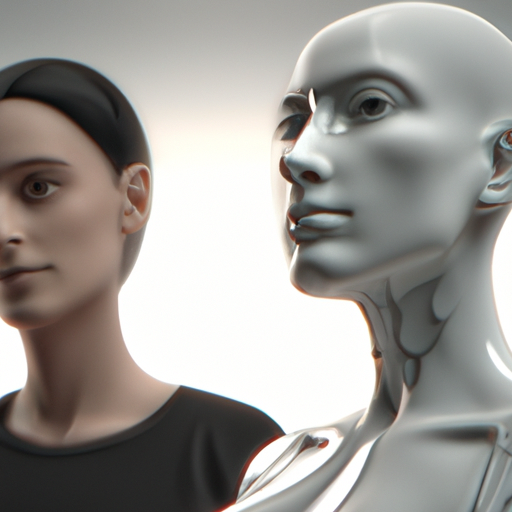

Future of AI and human2
The Future of Human and AI
Artificial intelligence (AI) has been around since the 1950s, and has made incredible progress in the last few decades. It is now capable of tasks that were once thought impossible – such as beating human champions at chess or playing Jeopardy against the best players. But what does the future have in store for the marriage of human and AI?
In the next 500 years, AI will become even more powerful and pervasive. Humans will continue to learn from AI, and AI will also learn from humans. We will see AI used to automate more mundane tasks, and to facilitate communication between humans and machines. We will also see AI used to help us make better decisions in our lives, from the most basic decisions (like what to eat for dinner) to the most complicated ones (like how to structure an investment portfolio).
AI will also be used to enhance our physical abilities. We will be able to use AI to augment our muscles and even our cognition, allowing us to extend our abilities far beyond what is currently possible.
At the same time, AI will be used to create new, more advanced forms of life that may be more intelligent than humans. We may also see the emergence of robotic companions, capable of understanding and responding to our needs.
Finally, AI will be used to help us explore the universe. AI-powered spacecraft, rovers, and probes will be sent to explore the far reaches of our universe, and may even be used to terraform other planets.
The marriage of human and AI is already here, and it will only become more powerful and ubiquitous in the coming years. It is an exciting time to be alive and to witness the dawn of an entirely new era in human and AI history.
未来の人間とAI
人工知能（AI）は1950年代から存在しており、最近数十年間で驚くべき進歩を遂げています。チェスやJeopardyを最高のプレイヤーに対して勝つなど、かつては不可能だと考えられていたタスクを行うことができる